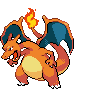

-
Bulbasaur #001

- Grama
- Veneno
There is a plant seed on its back right from the day this Pokémon is born. The seed slowly grows larger.
-
Ivysaur #002

- Grama
- Veneno
When the bulb on its back grows large, it appears to lose the ability to stand on its hind legs.
-
Venusaur #003

- Grass
- Poison
Its plant blooms when it is absorbing solar energy. It stays on the move to seek sunlight.
-
Charmander #004

- Fire
It has a preference for hot things. When it rains, steam is said to spout from the tip of its tail.
-
Charmeleon #005

- Fire
It has a barbaric nature. In battle, it whips its fiery tail around and slashes away with sharp claws.
-
Charizard #006
- Fire
It spits fire that is hot enough to melt boulders. It may cause forest fires by blowing flames.
-
Squirtle #007

- Water
When it retracts its long neck into its shell, it squirts out water with vigorous force.
-
Wartortle #008

- Water
It is recognized as a symbol of longevity. If its shell has algae on it, that Wartortle is very old.
-
Blastoise #009

- Water
It crushes its foe under its heavy body to cause fainting. In a pinch, it will withdraw inside its shell.
-
Caterpie #010

- Bug
For protection, it releases a horrible stench from the antenna on its head to drive away enemies.